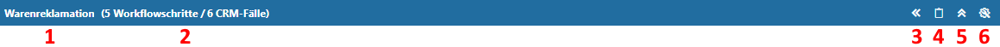
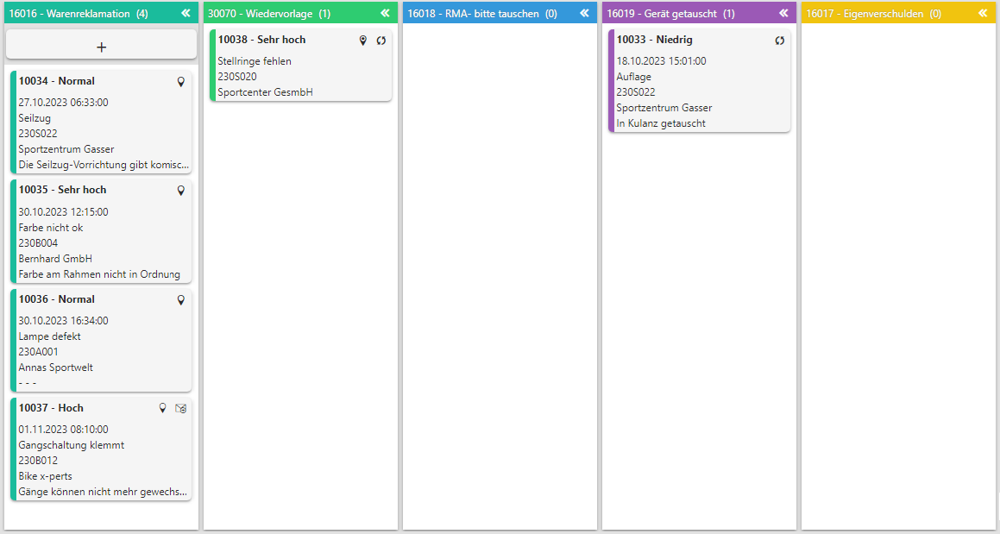
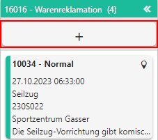
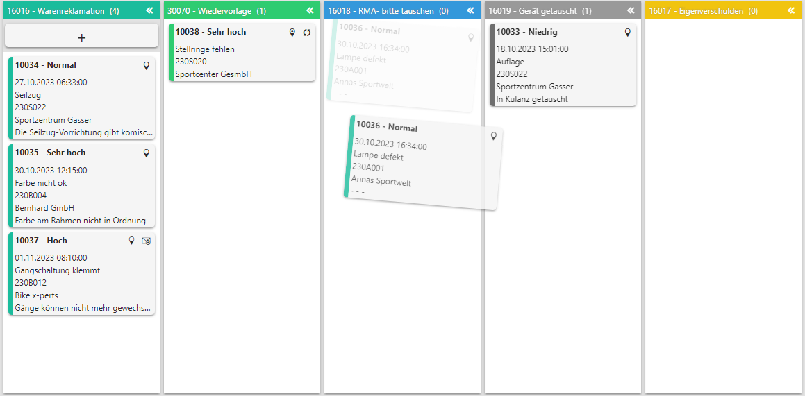
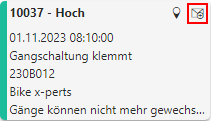
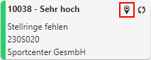
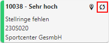

Der CRM Kanban besteht aus den Bereichen "Workflowleiste" und "Schrittübersicht".
Workflowleiste

In der Workflowleiste stehen Steuerungselemente zur Verfügung, welche sich auf den Workflow beziehen.
Hinweis
Der CRM Kanban erstellt automatisch eine Leiste pro Workflow / Prozess.
Ø Workflowname (1)
An dieser Stelle wird der Name des Startschritts angezeigt.
Ø Übersicht (2)
An dieser Stelle wird angezeigt aus wie vielen Schritten der Workflow besteht und wie viele CRM-Fälle existieren.
Ø alle Schritte auf- und zuklappen (3)
Durch Anwahl dieses Buttons werden alle Schritte zu- bzw. aufgeklappt.
Ø leere Spalten auf- und zuklappen (4)
Durch Anwahl dieses Buttons werden alle leeren Spalten zu- bzw. aufgeklappt.
Ø Workflow auf- und zuklappen (4)
Mit Hilfe dieses Buttons wird der Workflow zu- bzw. aufgeklappt.
Ø Widget-Einstellungen (5)
Durch Anwahl dieses Buttons werden die Einstellungen geöffnet. Dort kann der Inhalt der Widget-Kacheln (d.h. der CRM-Fälle) individuell gestaltet werden.
Schrittübersicht

In der Schrittübersicht wird pro Workflowschritt eine Spalte dargestellt, wobei Schritte des Typs "Nebenschritt" nicht berücksichtigt werden. Die Anordnung der Spalten kann per Drag & Drop individuell gestaltet werden.
Innerhalb der Spalten werden wiederum die CRM-Fälle in Form von Widget-Kacheln dargestellt. Die Schrittübersicht bietet über die Anzeige hinaus folgende Funktionen:
ü Anzeige von
Detailinformationen
Durch Anwahl der Überschrift einer Widget-Kachel wird die
Fallansicht geöffnet.
ü Neuen Fall erfassen
Neue
CRM-Fälle können durch Anwahl des Buttons "neuen Fall erfassen", welcher in der
Spalte des Startschritts dargestellt wird, erzeugt werden (entsprechende
Workflowrechte vorausgesetzt).
Beispiel

ü Verschieben von CRM-Fällen
Per
Drag & Drop können die CRM-Falle von einem in einen anderen Schritt
überführt werden. Welche Schritte möglich sind wie über die Farbgestalltung der
Spalten signalisiert.
Beispiel

Hinweis
Wenn in dem Workflowschritt eine CRM-Vorlage hinterlegt wurde, so wird der Schritt nicht direkt geschrieben, sondern erst, wenn dieses über die Vorlage per "Ok" bestätigt wird.
ü Uploads anzeigen
Sobald im
Aufbau der WinLine LIST-Liste die Variable "Uploads" vorhanden ist, wird auf
mögliche Uploads in der Widget-Kachel aufmerksam gemacht. Durch Anwahl des
Symbols öffnet sich die
Dokumenten-Vorschau, über welche die Dokumente des CRM-Fall betrachtet werden
können.
Beispiel

ü Fall anpinnen / Pin
entfernen
CRM-Fälle können durch Anwahl des Symbols gepinnt werden. Hierdurch wird zum
einen ein Fall-Abo für den CRM-Fall gesetzt und zum anderen die Kachel des Falls
immer am Anfang der Spalte dargestellt. Durch eine erneute Anwahl des Symbols
wird der Pin wieder entfernt
(d.h. Fall-Abo gelöscht und Standardsortierung wiederhergestellt).
Beispiel

ü Aktuellen Schritt erneut
ausführen
Wenn ein bereits ausgeführter Schritt direkt wiederholt werden
kann, so spricht man von einer Workflow-Schleife. Solch eine Schleife wird in
der Widget-Kachel mit Hilfe des Symbols dargestellt, wobei durch Anwahl des
Symbols der Schritt erneut ausgeführt / geschrieben wird.
Beispiel
